Näited siltidest
Vaata meie viimaseid töid meie Facebookist!

Valmistatud tammeplangule


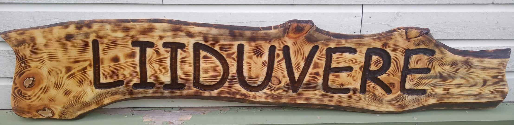


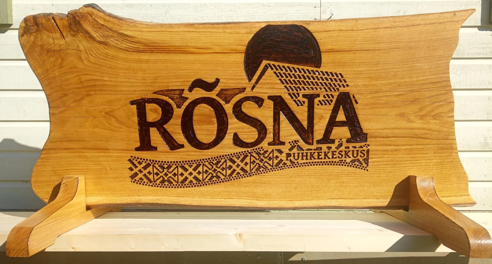


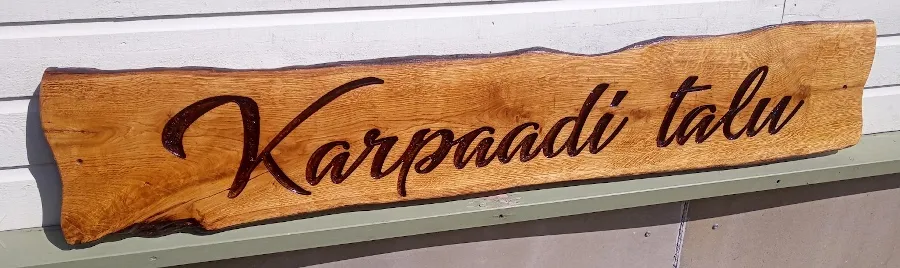


Kiri ja logod 5mm puidu sisse freesitud

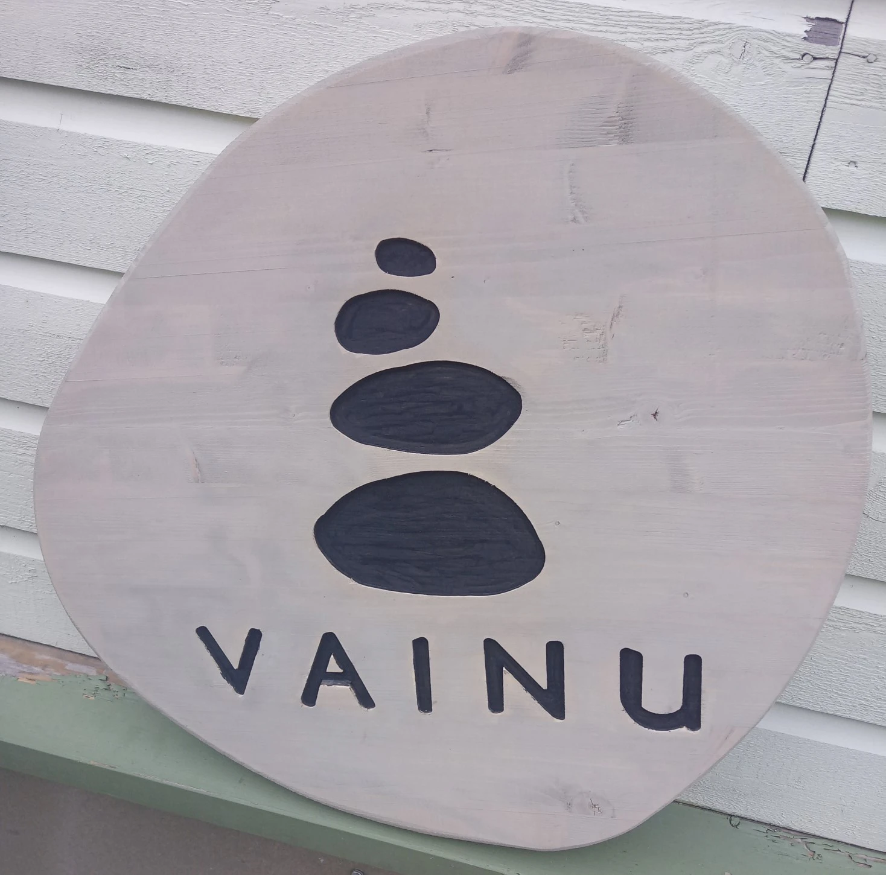

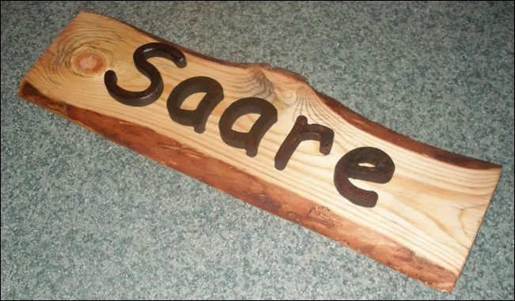
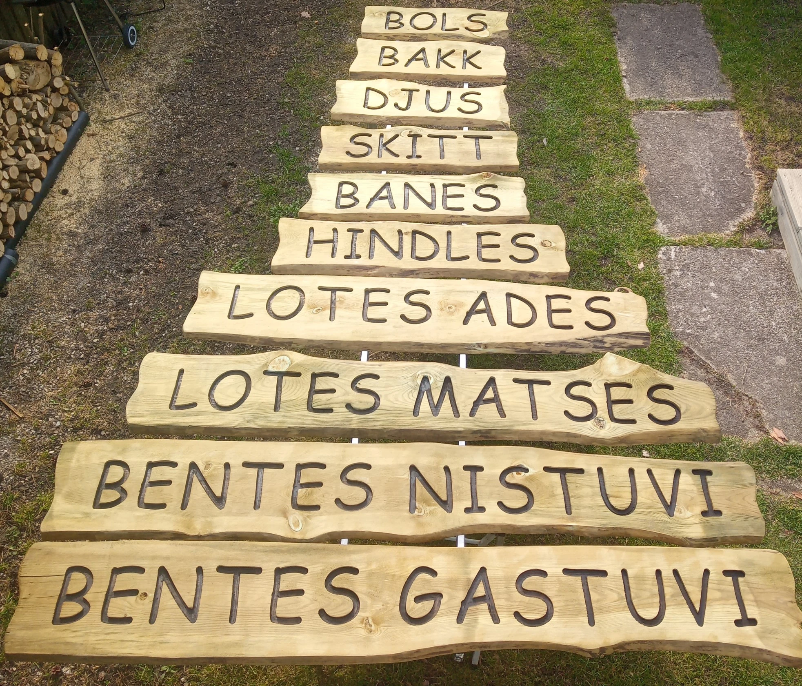
Pakri saare sildid, rohelisel vaakumimmutatud puidul


 0
0

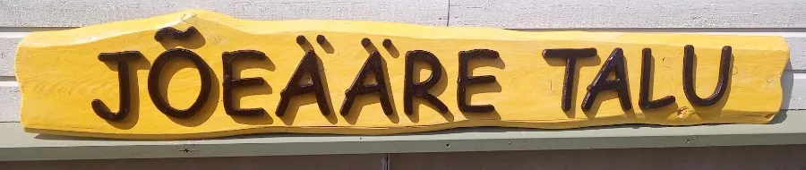


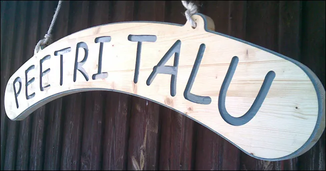


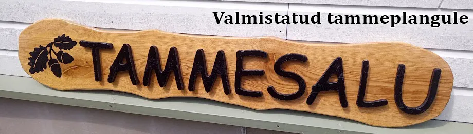


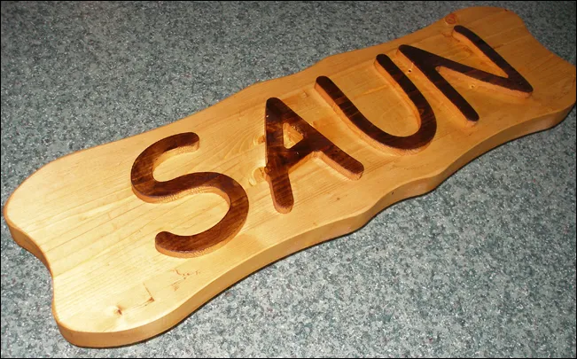


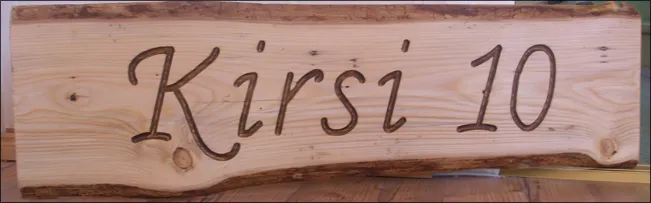
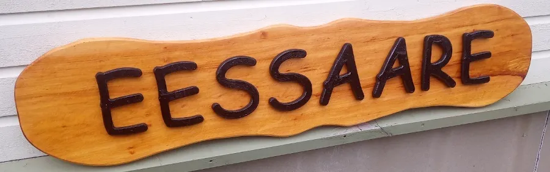
Valmistatud remmelga plangule